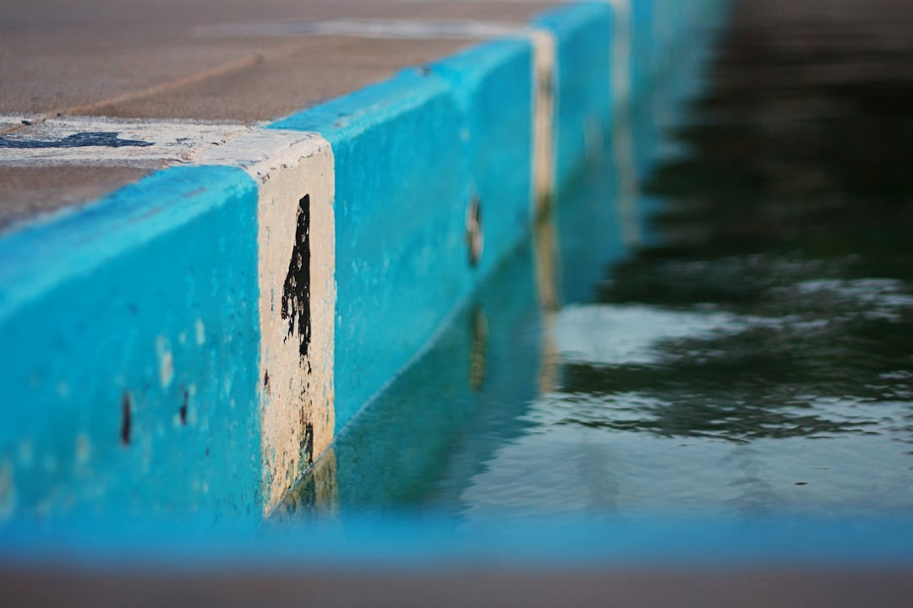

For a Brisbane pool site with retained ground, the published page identifies 6 planning pathways and 4 early interfaces: levels, water, access and construction scope. It publishes no fixed price, fixed timeframe or standard package. Owners should prepare the pool position, visible walls, level changes, access route, drainage observations and any existing surveys before seeking project-specific advice on approvals, structural input and written responsibility boundaries.
For Brisbane homeowners weighing concrete pool retaining walls, the useful starting point is how the pool shell, retained levels, drainage path and construction access will work as one project.
Concrete Pool Retaining Walls Explained
Pool Retaining Walls Brisbane presents these jobs as site-led work, with the pool shell, retaining, drainage, access and finished levels considered together. That framing suits sloping blocks and restricted access yards because the wall cannot be judged only by its face, and the pool cannot be judged only by its waterline.
Begin by marking where the pool may sit, where ground levels change, how water moves now and how machinery could enter and leave. Add photographs of existing walls, nearby structures, narrow entries and any visible drainage paths. A rough sketch, access measurements and existing surveys help a provider separate design preferences from conditions that may need qualified confirmation.
The Four Interfaces To Settle Early
The source page names levels, water, access and construction scope as the 4 interfaces to resolve before the layout hardens. Levels connect the pool edge, wall, garden and walking routes. Water covers runoff and existing drainage before excavation and new hard surfaces alter the yard.
- Levels: ask how the pool edge, wall top, garden levels and circulation routes will meet.
- Water: record where water runs, pools or enters the yard during rain.
- Access: measure gates, side passages and likely machinery routes.
- Scope: ask what is included, excluded and still subject to technical input.
For a related local overview, the pool retaining walls Brisbane guide keeps the same focus on site conditions and early project questions.
Who This Applies To
This guide applies to owners planning a new concrete pool where retained ground, changing levels, nearby walls or restricted access may affect the build. It also applies where an existing pool and wall arrangement needs renewal planning, because the source page says the wall's condition, construction, drainage and relationship to the proposed pool may affect the work.
The source page says it supports enquiries across Brisbane's inner west, established river suburbs and acreage-edge localities. Use that locality detail as a prompt for the actual site question. A tighter established property may need sharper access notes. A larger block can still need careful planning around excavation route, finished levels and water movement.
Approval And Technical Questions
The published FAQ gives a narrow approval answer: requirements depend on the wall, site and proposed work. It also says Brisbane City Council guidance and project-specific advice should be checked. Do not assume one wall detail or one past approval will suit a different address.
Before requesting written proposals, ask whether a pool-adjacent wall needs structural input, what drainage and waterproofing interfaces must be documented, and which responsibilities sit with the pool contractor, retaining wall contractor, engineer or other trades. The page does not state approval thresholds, engineering rules or standard timeframes, so those items should stay as questions until qualified advice is received.
Comparing Written Proposals
When comparing proposals for concrete pool retaining walls, look for evidence that each provider has responded to the same site facts. A useful proposal should address pool placement, retaining interfaces, levels, drainage, excavation sequence and access where the block changes level.
The source page points readers to a project scope builder and a site checklist. Use those tools to give each provider the same photographs, sketches, access notes, drainage observations and existing reports. If a proposal excludes technical input, reinstatement, drainage coordination or work around an existing wall, the exclusion may be manageable, but it needs to be visible before price or timing is compared.
What To Prepare Before A Review
A practical review starts with the information requested on the source page: intended pool location, photographs of existing walls and level changes, access dimensions, drainage observations and any surveys or reports already available. The enquiry form also asks readers to include access and nearby structures.
- Mark the likely pool position on a rough sketch or plan.
- Photograph level changes, existing walls, drainage paths and access points.
- Measure narrow entries, gates, side passages and likely machinery routes.
- Collect surveys, reports, previous approvals or documents already on hand.
- Write down where water pools, runs or enters the yard during rain.
Those inputs help a provider explain which parts can be priced from the first conversation and which parts need further confirmation.
- Map the site. Sketch the likely pool position, retained levels, existing walls, access route and visible drainage paths before asking for advice.
- Gather evidence. Collect photographs, access dimensions, drainage observations and any surveys or reports already available.
- Ask scope questions. Request written clarification on inclusions, exclusions, technical input and responsibility for pool, wall and drainage interfaces.
- Check approval path. Ask how the wall, site and proposed work affect approval requirements and what guidance or project-specific advice is needed.
| Decision area | What to check | Why it matters |
|---|---|---|
| Levels | Pool edge, wall height, garden levels and walking routes | These determine how the finished space joins together |
| Water | Runoff, existing drainage and new hard surfaces | Excavation and paving can change how water moves |
| Access | Machinery route, material handling and reinstatement | Restricted access affects sequencing and scope |
| Existing wall | Condition, construction, drainage and relation to the pool | The actual wall may change the project path |
| Documentation | Photos, measurements, surveys and reports | Comparable written proposals need the same inputs |
Common questions
Do all pool retaining wall projects in Brisbane need the same approval path? No. The source page says requirements depend on the wall, site and proposed work. Owners should check relevant council guidance and seek project-specific advice before treating any past example as a rule.
What information should I provide before a project review? Provide the intended pool location, photographs of existing walls and level changes, access dimensions, drainage observations and any surveys or reports already available. A rough sketch can help organise the discussion.
Can an existing wall change the plan for a new pool? Yes. The source page says the wall's condition, construction, drainage and relationship to the proposed pool may affect the work, so the actual wall and address need assessment.
Why compare scopes before comparing prices? The page does not publish fixed prices. Price comparisons are clearer when inclusions, exclusions and unresolved technical items are visible.
This guide covers site planning, scope comparison and early project questions for Brisbane pool and retaining wall work.